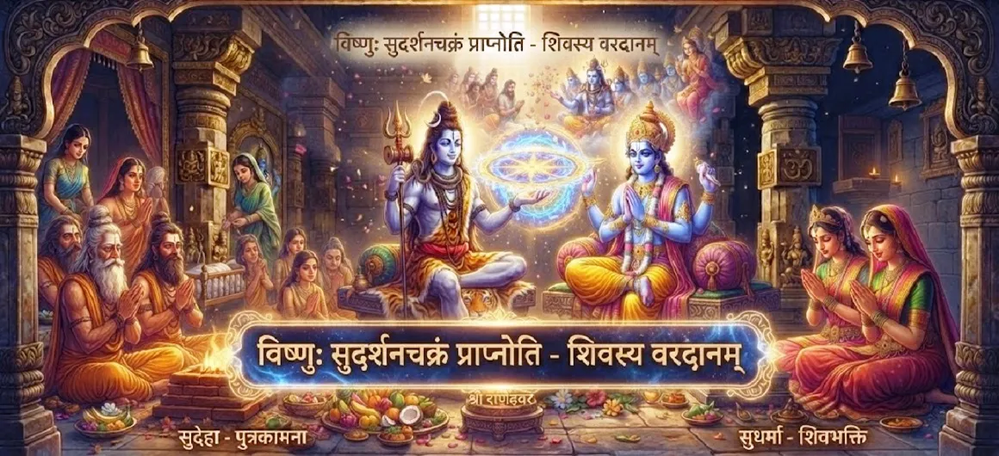

Vishnu Receives the Sudarshana Chakra
The thirty-fifth chapter of the Kotirudra Samhita narrates the sublime account of how Lord Vishnu worshipped Mahadeva and obtained the invincible Sudarshana Chakra.
Illustrating the harmonious synergy between the cosmic preserver and the supreme destroyer, this chapter highlights the power of intense devotion and ritual worship.
It serves as a direct bridge to the sacred unveiling of the thousand names of Shiva.
Chapter 35 Highlights
Cosmic Devotion
Lord Vishnu's intense worship of Mahadeva.
Sudarshana Chakra
The grant of the supreme weapon of protection.
Thousand Offerings
The sacred ritual archana performed by Vishnu.
Preservation Power
Empowering the sustainer of the universe against evil.
Divine Grace
Shiva's boundless generosity toward His devotees.
Prelude to Sahasranama
Connecting ritual worship to the thousand divine names.
Core Topics in This Chapter
- 01Lord Vishnu's Quest for Cosmic Protection→
- 02Intense Penance and Worship of Mahadeva→
- 03The Offering of a Thousand Lotus Flowers→
- 04Lord Shiva's Test of Devotion→
- 05Appearance of the Sudarshana Chakra→
- 06Boons Bestowed Upon Lord Vishnu→
- 07Harmony Between Shiva and Vishnu→
- 08Empowerment to Protect Dharma→
- 09Significance of the Sudarshana Weapon→
- 10Transition to Chapter 36→
Lord Vishnu's Quest for Cosmic Protection
As the preserver of the universe, Lord Vishnu sought an infallible weapon to vanquish powerful demonic forces and maintain cosmic order.
He turned to Lord Shiva, the supreme source of all divine energy.
Intense Penance and Worship of Mahadeva
Lord Vishnu performed rigorous penance and devotional worship, chanting sacred mantras and offering his complete surrender at the feet of Mahadeva.
His exemplary devotion set a standard for all seekers.
The Offering of a Thousand Lotus Flowers
During a special worship ritual, Vishnu resolved to offer one thousand lotus flowers to Lord Shiva, invoking each flower with a distinct sacred name.
This ritual formed the basis of the sacred Sahasranama tradition.
Lord Shiva's Test of Devotion
To test the completeness of His devotion, Lord Shiva secretly removed one lotus flower from the offering, leaving Vishnu short by one.
Without hesitation, Vishnu offered his own lotus-like eye as a replacement.
Appearance of the Sudarshana Chakra
Deeply gratified by this supreme sacrifice and unwavering faith, Lord Shiva appeared in all His glory and manifested the blazing Sudarshana Chakra.
The weapon radiated with the brilliance of a thousand suns.
Boons Bestowed Upon Lord Vishnu
Mahadeva formally presented the Sudarshana Chakra to Vishnu, declaring it invincible against any force in the three worlds and granting him supreme victory.
Divine boons sealed the partnership of cosmic preservation.
Harmony Between Shiva and Vishnu
This narrative reinforces the profound spiritual truth that Shiva and Vishnu are one in essence—the supreme creator/destroyer and the supreme sustainer working as one.
Their divine cooperation ensures the balance of the cosmos.
Empowerment to Protect Dharma
Armed with the Sudarshana Chakra, Lord Vishnu became fully empowered to protect righteous beings, eliminate adharma, and guide the universe toward peace.
Righteousness was fortified by divine weaponry.
Significance of the Sudarshana Weapon
The Sudarshana Chakra represents the wheel of time, spiritual illumination, and the destruction of ignorance, serving as an eternal symbol of divine power.
Its spinning edge cuts through illusion.
Transition to Chapter 36
Having described how Vishnu received the Sudarshana Chakra through his thousand-name worship, the narrative seamlessly transitions to Chapter 36 to reveal the Shiva Sahasranama.
Readers are invited to continue to Chapter 36.
Key Teachings of Chapter 35
Supreme Surrender
Complete devotion wins the grace of Mahadeva.
Divine Weaponry
The Sudarshana Chakra as a gift of absolute protection.
Sacrifice in Bhakti
Going above and beyond in ritual offering.
Cosmic Unity
The inseparable bond between Shiva and Vishnu.
Protection of Dharma
Empowering righteousness across the universe.
Path to Sahasranama
Laying the foundation for Shiva's thousand names.
Spiritual Reflection
The story of Lord Vishnu receiving the Sudarshana Chakra in the Kotirudra Samhita is a magnificent illustration of divine harmony and the rewards of supreme surrender. Even the preserver of the universe, Lord Vishnu, subjected Himself to rigorous penance and devotional archana to win the grace of Mahadeva. When tested, His willingness to offer His own eye demonstrated that true bhakti requires total self-effacement. This sacred exchange reminds spiritual seekers that all divine power originates from the Supreme Consciousness, and true strength is granted only to those who dedicate their actions to the protection of righteousness.
Living the Message of Chapter 35
Approach your spiritual practices and daily duties with total dedication, viewing every challenge as a test of faith.
Recognize that true strength and protection come from surrendering your ego to the Supreme Lord and serving dharma with an unselfish heart.
Let your devotion be as unwavering as Vishnu's.
Key Spiritual Concepts
The harmonious cooperation between Shiva and Vishnu.
The invincibility granted by the Sudarshana Chakra.
Offering one's own faculties as proof of devotion.
Ritual offering accompanied by sacred names.
Maintaining universal balance through divine empowerment.
The transition into chanting the thousand names of Shiva.
Chapter Summary
Kotirudra Samhita Chapter 35 details how Lord Vishnu performed intense penance and devotional archana to Mahadeva, offering a thousand lotus flowers and even his own eye. In response, Lord Shiva appeared and bestowed the invincible Sudarshana Chakra, empowering Vishnu to protect cosmic order and setting the stage for the revelation of the Shiva Sahasranama in Chapter 36.
Frequently Asked Questions
1. What is the central theme of Kotirudra Samhita Chapter 35?
Chapter 35 narrates how Lord Vishnu worshipped Lord Shiva with supreme devotion and was blessed with the invincible Sudarshana Chakra.
2. How does Chapter 35 connect with the previous chapter?
Following the manifestation of the final Jyotirlinga, Chapter 35 transitions to cosmic accounts of divine synergy between Mahadeva and Lord Vishnu.
3. Why did Lord Vishnu need the Sudarshana Chakra?
Lord Vishnu sought a supreme weapon of cosmic preservation to vanquish evil forces, maintain universal order, and uphold righteousness.
4. How did Lord Shiva test or bless Lord Vishnu?
Impressed by Vishnu's rigorous penance, thousand-name worship (archana), and absolute surrender, Lord Shiva appeared and graciously bestowed the Sudarshana Chakra.
5. What narrative follows this chapter?
The narrative transitions to Chapter 36, 'The Shiva Sahasranama'.
6. What is the significance of the Sudarshana Chakra in Hindu cosmology?
The Sudarshana Chakra represents the wheel of time, absolute cosmic protection, and the supreme energy of destruction of negativity wielded by Vishnu.
“Through intense devotion, absolute surrender, and sacred archana, Lord Vishnu won the grace of Mahadeva and received the invincible Sudarshana Chakra.”
Continue Through Kotirudra Samhita
Chapter 35 explores how Vishnu receives the Sudarshana Chakra. Continue to Chapter 36, The Shiva Sahasranama.